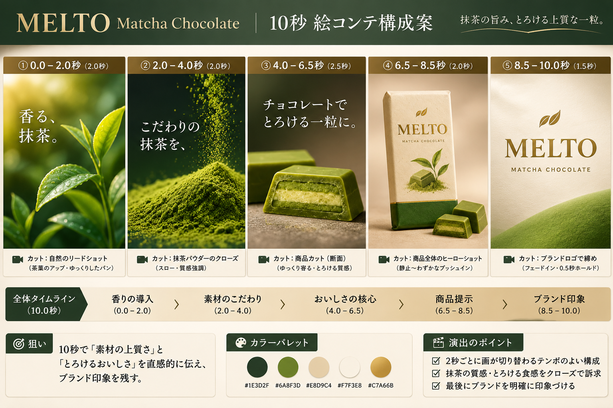
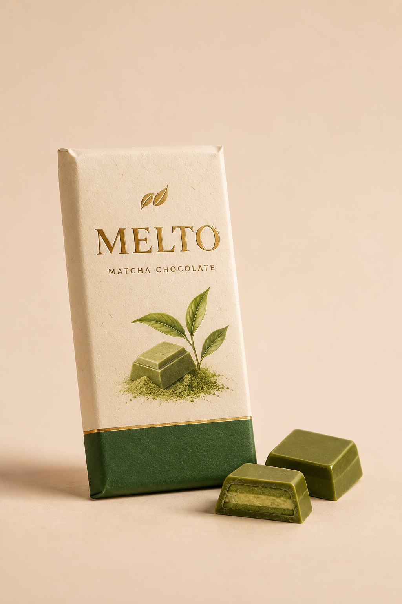
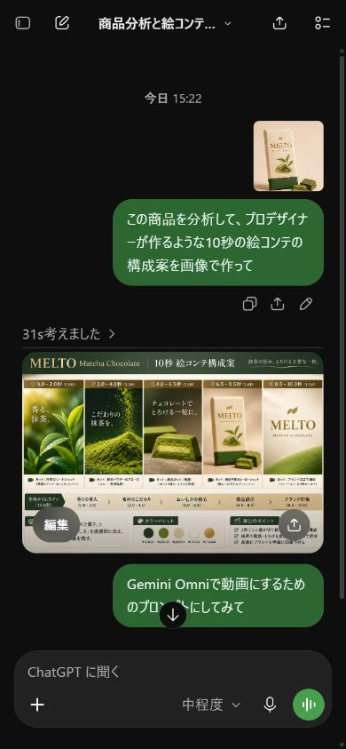
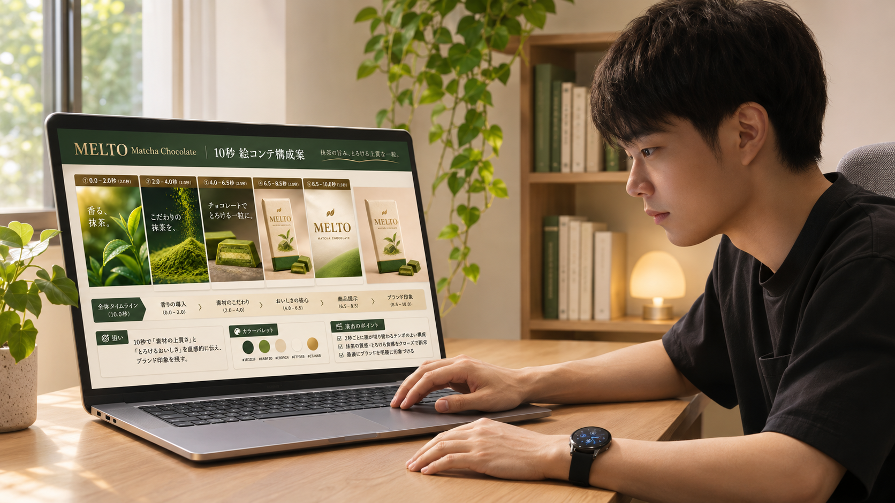
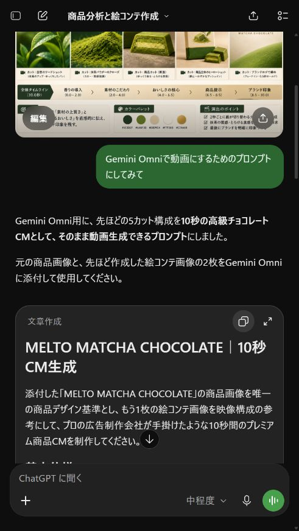
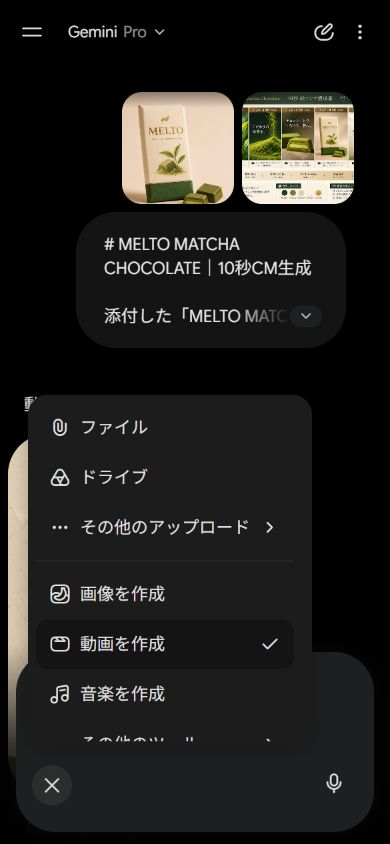
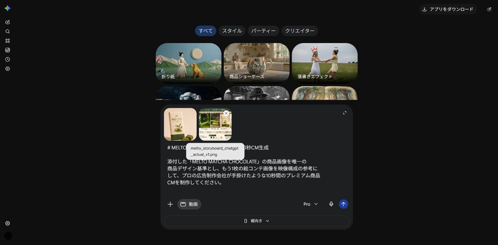
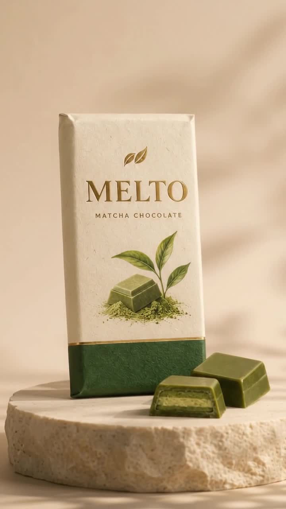
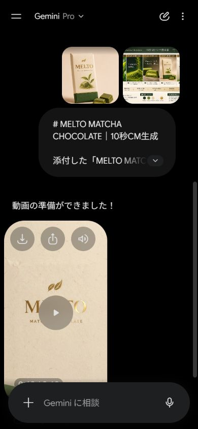

0〜2秒茶葉緑の世界へ入る

構成づくりからAIへ。まずは、写真1枚から1本つくる流れを試してみてください。
MELTOの生成例。縦型9:16・約10秒／音が出ます。
使う権利のある商品写真、画像を扱えるChatGPT、動画作成が使えるGeminiを用意します。個人アカウントではGoogle AIプランが必要です。18歳未満は利用できません。利用枠と画面はアカウントで確認してください。
今回は、AIで作った練習用の商品画像「MELTO」を使います。画像、絵コンテ、生成動画を保存セットへ入れています。

今回は、このMELTOで進めます。自分の商品なら、スマホで全体が入る1枚を撮ればOKです。
最初から、構成を考え込まなくていいんです。 まず画像を渡して、どう見せるかをChatGPTに作ってもらいます。
箱やラベルまで分かる、背景のすっきりした写真を用意します。縦型なら9:16、横型なら16:9。動画用の指示文とGeminiの設定も同じ比率へそろえます。
商品画像を添付して、こう送ります。出てきたのが、この5カットです。

この商品を分析して、プロデザイナーが作るような10秒の絵コンテの構成案を画像で作って

0〜2秒茶葉緑の世界へ入る
2〜4秒抹茶粉末の質感を見せる
4〜6.5秒断面チョコへ寄る
6.5〜8.5秒商品全体箱と2粒を見せる
8.5〜10秒ロゴ最後に名前を残す

僕のときは、実際10分くらい。構成も次の指示文も任せるので、ずっと手を動かすわけじゃないんです。
所要時間は僕の一例。生成待ちや修正で変わります。
同じChatGPTで、次の一文を送るだけ。返答は途中を省かず、全文コピーします。絵コンテ画像も保存しておきます。
Gemini Omniで動画にするためのプロンプトにしてみて

# MELTO MATCHA CHOCOLATE｜10秒CM生成 添付した「MELTO MATCHA CHOCOLATE」の商品画像を唯一の商品デザイン基準とし、もう1枚の絵コンテ画像を映像構成の参考にして、プロの広告制作会社が手掛けたような10秒間のプレミアム商品CMを制作してください。 ## 基本仕様 - 動画時間：正確に10秒 - 画面比率：9:16（Instagramリール・TikTok向け） - 映像品質：フォトリアル、シネマティック、高級広告品質 - 世界観：日本の上質な抹茶スイーツ、自然、洗練、静かな贅沢 - 色調：深緑、抹茶グリーン、温かいアイボリー、シャンパンゴールド - 画質：超精細な商品撮影、リアルな質感、自然な陰影 - ナレーション：なし - 音楽：上品でミニマルなインストゥルメンタル。柔らかいピアノと繊細なアンビエントサウンド - 効果音：茶葉の揺れる音、抹茶粉末が舞う音、チョコレートの繊細な質感を感じさせる音 ## シーン構成 ### SCENE 01｜0.0〜2.0秒 「抹茶の世界へ」 朝の柔らかい陽光を浴びる、瑞々しい緑色の茶葉を極端なマクロ撮影で映す。 葉の表面には小さな水滴があり、光を受けて美しく輝く。 カメラは茶葉の間をゆっくり移動する。浅い被写界深度、背景は美しいボケ。 上質で落ち着いた自然の空気感を表現する。 ### SCENE 02｜2.0〜4.0秒 「抹茶の質感」 暗い深緑の背景。 鮮やかな抹茶パウダーがスローモーションで空中に舞い、柔らかく積もっていく。 超接写で微細な粉末の粒子まで鮮明に描写。 横から差し込む一筋の柔らかい光が、抹茶の立体感と繊細さを引き立てる。 粉末の動きに合わせて、自然で流れるように次のカットへ移行する。 ### SCENE 03｜4.0〜6.5秒 「食べたくなる瞬間」 添付の商品画像にある抹茶チョコレートを主役にする。 断面の見えるチョコレートを超マクロ撮影。 外側の深い抹茶グリーン、内側の明るい抹茶色の層、なめらかな表面を忠実に再現する。 カメラが断面へゆっくり寄り、照明がチョコレートの質感を美しく引き立てる。 わずかな光沢で口どけを連想させるが、元の商品にないクリームや液体は追加しない。 ### SCENE 04｜6.5〜8.5秒 「商品ヒーローショット」 温かみのあるベージュ背景に、MELTOのパッケージと2粒の抹茶チョコレートを美しく配置。 構図は添付した実物画像を忠実に再現する。 パッケージはクリーム色の和紙風テクスチャ、下部は深緑、中央には金色のMELTOロゴと植物のイラスト。 カメラがごくゆっくり前方へドリーイン。 柔らかい自然光と高級感のある影で、洗練された商品広告に仕上げる。 ### SCENE 05｜8.5〜10.0秒 「ブランドの余韻」 背景を美しいアイボリーの紙質感に切り替える。 中央に金色のブランドロゴ「MELTO」。 その下に小さく「MATCHA CHOCOLATE」。 ロゴは添付した商品画像のデザインに忠実に再現する。 背景下部に控えめな抹茶グリーンの曲線。 最後の0.5秒は静止に近い状態でブランド名を印象づける。 ## 最重要事項 1. 商品のパッケージ、MELTOロゴ、色、形、イラスト、チョコレートの形状と断面は添付画像と一致させる。 2. 商品名・ロゴの綴りを変更しない。 3. 映像内に人物、手、不要な小物を追加しない。 4. 絵コンテ画像にある枠線、秒数表示、説明文、レイアウトは動画に表示しない。 5. 映像は5シーンを自然に編集した1本の10秒CMにする。 6. 不自然な変形、パッケージの歪み、ロゴの崩れ、過剰なCGエフェクトは禁止。 7. 原材料の産地、健康効果、受賞歴など、確認できない情報は表示しない。 8. 高級化粧品の広告のような照明と構図を使いながら、主役はあくまで抹茶チョコレートとする。 全体を通じて、映像の密度、余白、光、カメラワーク、カットのリズムにこだわり、10秒という短さでもブランドの上質さと商品の魅力が伝わるCMに仕上げてください。

あとは生成待ち。出てきたら、最初から最後まで再生してみてください。

Web版はサイドバーの「動画を作成」を開きます。端末や更新で場所は変わるので、公式ヘルプも確認してください。今回は10秒の希望で生成しています。出力の尺が違う場合は、対応する長さに構成を合わせます。

生成動画の1カット直すなら「何秒の、何を」だけ絞ります。確認できたら、動画のメニューからダウンロード。保存先でも再生できたら、まず1本です。

直前の動画の【6.5〜8.5秒】だけを修正してください。 【直す点】商品のパッケージが元画像と違っています。 添付した元画像に合わせて、クリーム色と深緑の配色、MELTOの綴り、箱の形を保ってください。 それ以外のカット順、背景、色、アスペクト比は変更しないでください。
スマホはファイルアプリ等、PCはダウンロードフォルダを開きます。「melto_promo_v1」のように名前を付け、元画像と同じフォルダへ。保存した動画を最後まで見てください。元画像は残しておきます。
MELTO元画像、5カット絵コンテ、Geminiの実生成動画、指示文4本・記入シート、このガイド入り。ZIPを展開し「index.html」をブラウザで開くと見返せます。
練習セットを保存する（ZIP）指示文は、各txtファイルからも全文コピーできます。
まずは、この画像をChatGPTへ送ってみてください。自分の商品があるなら、スマホで1枚撮るところからでOKです。
たとえば「商品写真から10秒の紹介動画を1本」。縦横の比率、見せたい特徴、修正の範囲、納期を先に確認します。作ったら、同じ商品に見えるかまで見て渡します。
商品紹介動画を作れたら、次は「誰に、何を提供するか」。AI副業の進め方をまとめた「AIマネタイズの教科書」を、僕の公式LINEでお渡ししています。
 公式LINEで教科書を受け取る
公式LINEで教科書を受け取るGeminiで動画を作成・保存する
利用条件・操作の確認：2026年11月7日。